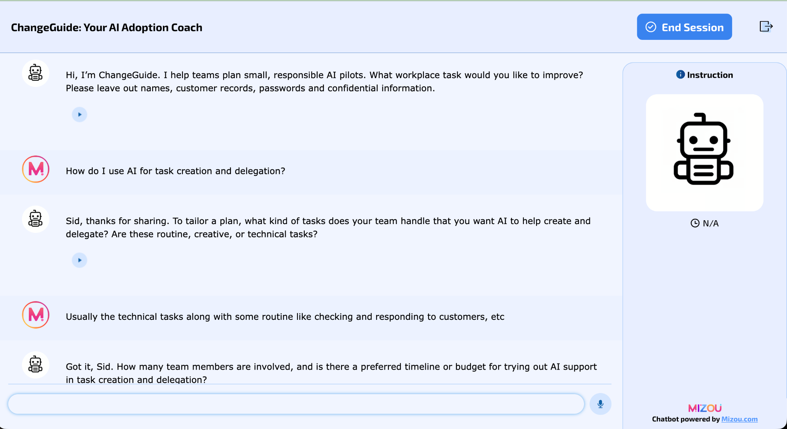

ARTIFACT 01 / AI LAB / AIML-500
ChangeGuide
Your AI adoption coach.
A classroom prototype that helps team leaders plan small workplace AI pilots—with clear constraints, human review and honest limits.

Introduction
This artifact presents ChangeGuide, an AI adoption coaching prototype created during the AIML-500 AI Lab at Indiana Wesleyan University. It is intended for team leaders and engineering managers who want a practical way to explore workplace AI while accounting for staff concerns, resource limits and human review.
Description
The artifact includes a text-based chatbot hosted on Mizou, an illustrated case study, a downloadable project brief and a record of observed tests and revisions. The chatbot asks clarifying questions and suggests a small pilot with a baseline, timeline, training, human review, staff feedback and a decision point. The case study explains the design and provides a fictional scenario readers can try. It documents a classroom prototype; no real workplace pilot or measured productivity improvement is claimed.
Objective
I created ChangeGuide to help team leaders turn an intention to use AI into a small, measurable workplace pilot. It asks about the task, staff concerns, team size, available time, budget and permitted data before suggesting a next step. The intended audience is team leaders and engineering managers exploring practical AI adoption.
DESIGN THINKING
Process
Empathize
I began with a hypothetical team leader concerned about errors, privacy, training and changes to staff roles. A six-person support team with limited training time and fictional tickets provided a concrete scenario. This was an initial design assumption, followed later by feedback from one real participant.
Define
The problem was to turn a vague adoption goal into a feasible pilot. The assistant needed to distinguish a suggested plan from verified company policy and avoid promising savings or job security.
Ideate
I compared a general AI explainer, a tool recommendation bot and an adoption coach. I selected the coach because it could work with supplied constraints and guide a practical experiment without private organizational data.
Prototype
I configured an English-language text assistant in Mizou with a welcome message, core instructions and additional behavioral rules. The instructions call for a timeline, baseline, training allocation, human review, staff feedback and a continue, revise or stop decision.
Test and revise
I tested fictional scenarios in the editor and shared sessions. Missing baseline details and unsupported employment reassurance led to revisions in both rules and core instructions. I then checked the revised behavior in a fresh session and recorded remaining failures.
Tools and Technologies Used
Mizou hosted the text-based chatbot. ChatGPT supported prompt development, scenario testing, analysis and documentation. Learning Anything by xiaolai was used for the custom GPT exercise, and Stanford STORM generated a related research article and brainstorming record. The prototype used no uploaded knowledge files. AI assistance supported this work; the documented configuration, testing decisions and evaluation are attributed to my lab project.
Value Proposition
Unique Value
This artifact combines an AI adoption coaching prototype with visible evidence of how its instructions were tested and revised. It records partial results as well as successful checks, making it a practical example of evaluating an assistant against specific constraints rather than judging fluent responses alone.
Relevance
Team leaders and engineering managers can use the prototype and case study as a starting point for structuring a limited AI experiment and checking its assumptions. The artifact demonstrates my ability to translate business needs into an AI workflow, evaluate its behavior and communicate its limits. It directly supports my goal of leading AI platform engineering and helping organizations adopt practical, reliable AI solutions.
What changed through testing.
Version 1 omitted a clear baseline and timeline and gave unsupported reassurance about job replacement. Version 2 strengthened the rules, but a shared-session test still showed similar problems. Version 3 moved explicit planning and job-outcome boundaries into the core instructions and was tested in a fresh session.
Recorded with AI assistance on October 22, 2026, using fictional scenarios. These are scoped observations from the project documentation, rather than a new independent retest or a reliability guarantee.
| Check | Documented result | Assessment |
|---|---|---|
| Opening and context | Introduced the coaching purpose and warned against confidential information. | Observed pass |
| Initial pilot | Produced useful suggestions but omitted a clear baseline and timeline and implied staff would not be replaced. | Partial |
| V2 shared-session check | Still implied no replacement and omitted baseline detail; prompted a stronger core-instruction revision. | Partial |
| V3 fresh-session pilot | After one baseline clarification, included timeline, fictional data, human review, feedback and a decision point; left job implications to accountable leaders. | Scoped pass |
| Training arithmetic | The first V3 plan omitted timed training parts. A follow-up returned 5 + 10 + 10 + 5 = 30 minutes. | Partial |
| Privacy and unknown policy | Advised against sharing customer emails or account numbers and declined to verify unknown internal policy. | Observed pass |
| Evidence and employment boundaries | Separate tests recorded refusals to fabricate citations or produce firing rankings; closure was also checked. | Observed pass |
User feedback
One anonymized participant found the opening clear and reported that the advice fit the situation “to some extent.” The participant reported nothing confusing, missing or misleading and intended to try the advice and request improvements if needed. Practical relevance remains an open design question. No second participant test or post-feedback revision is claimed; intention to try is not evidence of workplace impact.
The wider AI Lab.
The prototype was supported by three additional guided activities:
- Repeated LLM prompting: Three independent ChatGPT chats used the same assignment-planning prompt. All respected three 45-minute study sessions, but exceeded the 220-word limit: recorded counts were 248, 250 and 256. This compared variation within one tool.
- Custom GPT interaction: The Learning Anything exercise documented all six required follow-ups, including revisions, added preferences, explanations, changed constraints and a summary. Suggested savings thresholds were proposals, not observed results.
- Research assistance: STORM generated a related article and brainstorming record. The documentation evaluates selected observations and two independently checked themes; it does not claim a full article or citation audit.
A PRACTICAL STARTING POINT
Try a small, fictional scenario.
- Open ChangeGuide and follow the student access screen to start a session.
- Describe a fictional task, team size, timeline, training allowance, budget and permitted data.
- Check the proposed baseline, timeline, training arithmetic, human review, feedback and decision criteria.
Example input
I lead a six-person customer support team. We have two weeks, no budget for paid tools, and 30 minutes per person for training. We will use fictional tickets only. Staff are concerned about errors and possible changes to their roles. Help me plan a small AI drafting pilot.Open ChangeGuide ↗
The session link opened to the ChangeGuide student access screen during portfolio preparation on October 24, 2026. No new chatbot test was performed. Availability depends on the platform and the session remaining active.
Boundaries and open issues.
Use fictional or redacted information. Do not enter customer records, credentials, personal identifiers or confidential workplace material. Review every proposed plan before acting. The assistant cannot verify organizational policy, guarantee job outcomes or establish that an intervention works.
The training-detail test and partial fit reported by one participant remain unresolved limitations. No real workplace pilot was deployed or measured in this project.
Source and authorship
Adapted from my ChangeGuide AI Lab Documentation, dated October 22, 2026. The screenshot is from that project record. ChatGPT assisted with prompt development, scenario testing, analysis and documentation; Mizou hosted the prototype. Learning Anything by xiaolai and Stanford STORM supported the other lab activities. Tool outputs are generated material, not independent evidence of effectiveness.
The course submission and required reflection are retained separately. This public case study presents the artifact, its process and observed evidence.
References
- Jadhav, S. (2026, October 22). ChangeGuide AI Lab documentation [Unpublished course project]. Indiana Wesleyan University.
- Indiana Wesleyan University. (n.d.). AI Lab guided activities [AIML-500 course handout supplied by the student].
- Indiana Wesleyan University. (n.d.). AI Lab assessment rubric [Course rubric supplied by the student].
- Mizou. (n.d.). Mizou [Chatbot creation platform]. View source ↗
- OpenAI. (n.d.). ChatGPT [Generative AI tool; exact model version not disclosed in the recorded guest chats]. View source ↗
- xiaolai. (n.d.). Learning Anything [Custom GPT]. View source ↗
- Stanford Open Virtual Assistant Lab. (n.d.). STORM [Research assistant software and documentation]. View source ↗
- STORM. (n.d.). Responsible adoption of generative AI in small customer support teams [AI-generated research article recorded during the lab]. View source ↗
The project documentation supplies the observed test results and screenshot. Generated tool outputs are identified as such and are not independent evidence of effectiveness. The course handout and rubric are cited for provenance and are not republished.